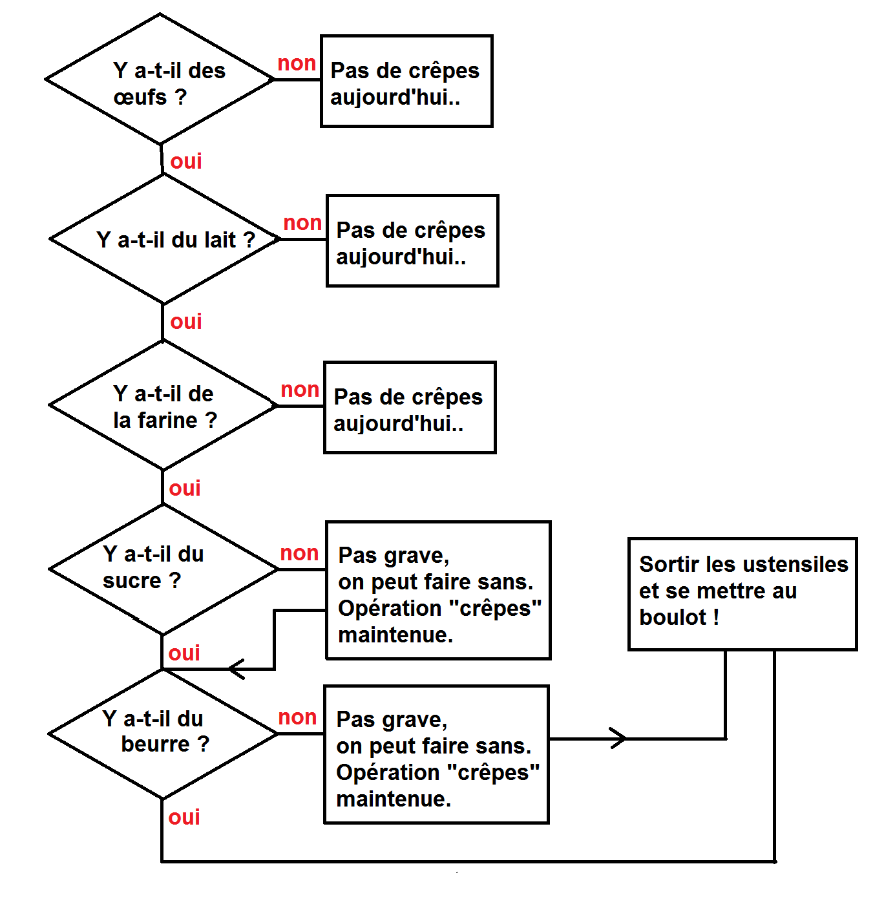

<html></html>
    <head>
        <meta charset="utf8"/>
        <link rel="stylesheet" href="global.css">
        <title>Règle du jeu</title>
        <link rel="icon" href="images/favicon.png">
    </head>


    <h1>Les règles du jeu</h1>
    <hr>

    <div id="menu"> <!--menu déroulant-->
        <ul class="navbar">
          <li>
            <b><a href="index.html">Jeu de la crêpe</a></b>
        </li>
        <li>
            <b><a href="rules.html">Règle du jeu</a></b>
        </li>
        <li>
            <b><a href="nsi.html">La Nsi</a></b>
        </li>
        </ul><br><br>
    </div>

    <h2>Le contexte et le but du jeu de la crêpe</h2><br><br>

    <div class="rules">
        
        <p>Dans ce jeu, vous incarnez un crépier psychorigide, ainsi il ne dispose pas de beaucoup de manières pour manipuler les crêpes,
        et c'est tout ce qui fait l'intérêt du jeu ! <br><br>   
        Le crépier vient de finir sa fournée de crèpe et souhaite les trier en plaçant les crêpes de la plus grande en bas jusqu'à la plus
        petite en haut de la pile. 
        Mais ce n'est pas tout, le crépier a malheureusement fait cramer une face de chaque crêpe, il aimerait donc mettre la face cramée,
        représentée par le côté sombre de la crêpe, de tel manière à ce que l'on voit uniquement la face non-cramée.
        </p>
    </div>

    <h2>Comment jouer ?</h2><br><br>

    <div class="rules">
        
        <p>La seule action disponible est de retourner les crêpes, vous pouvez le faire avec n'importe quel nombre de crêpes,
            et les retourner veut aussi dire inverser la face visible (la face non-cramée invisible devient visible par exemple)
        </p>
    </div>


</html>